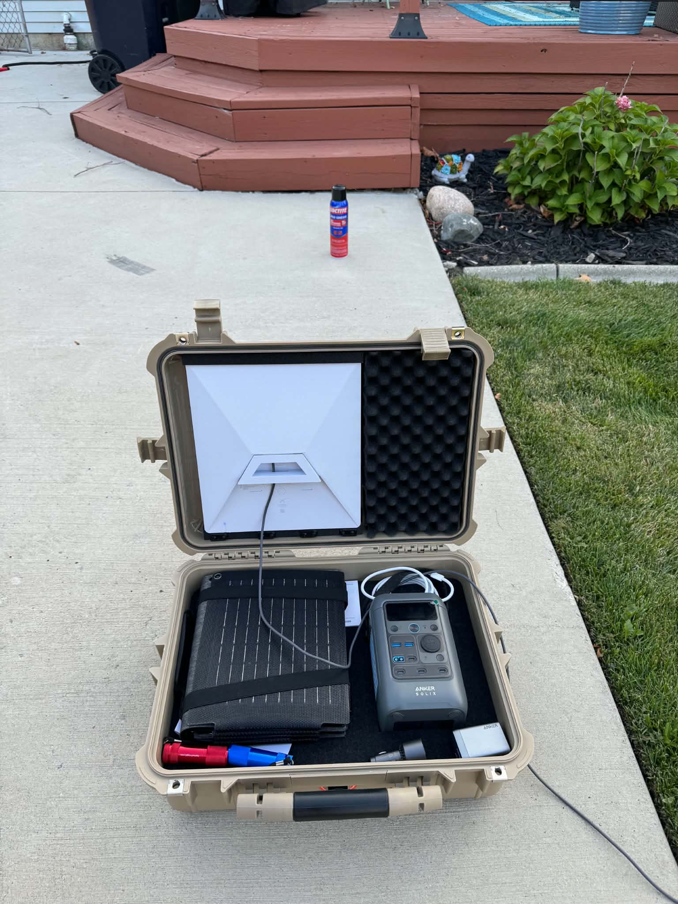
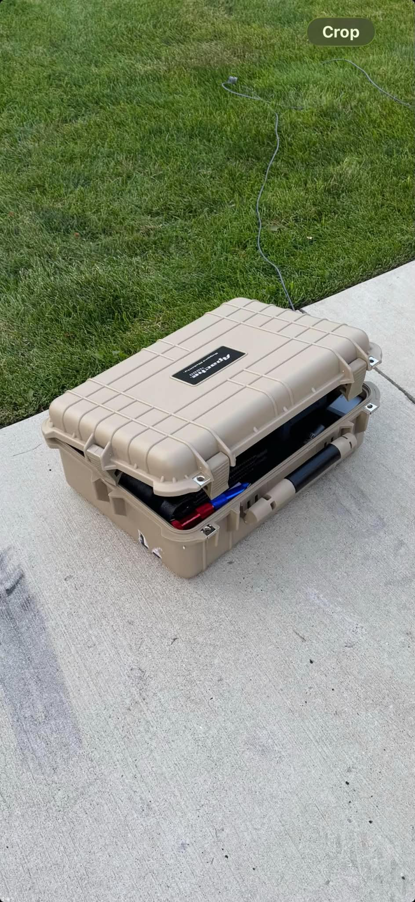
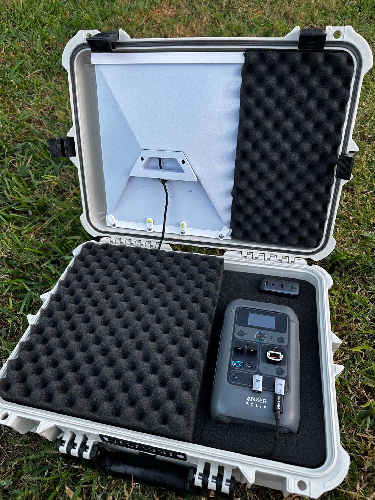
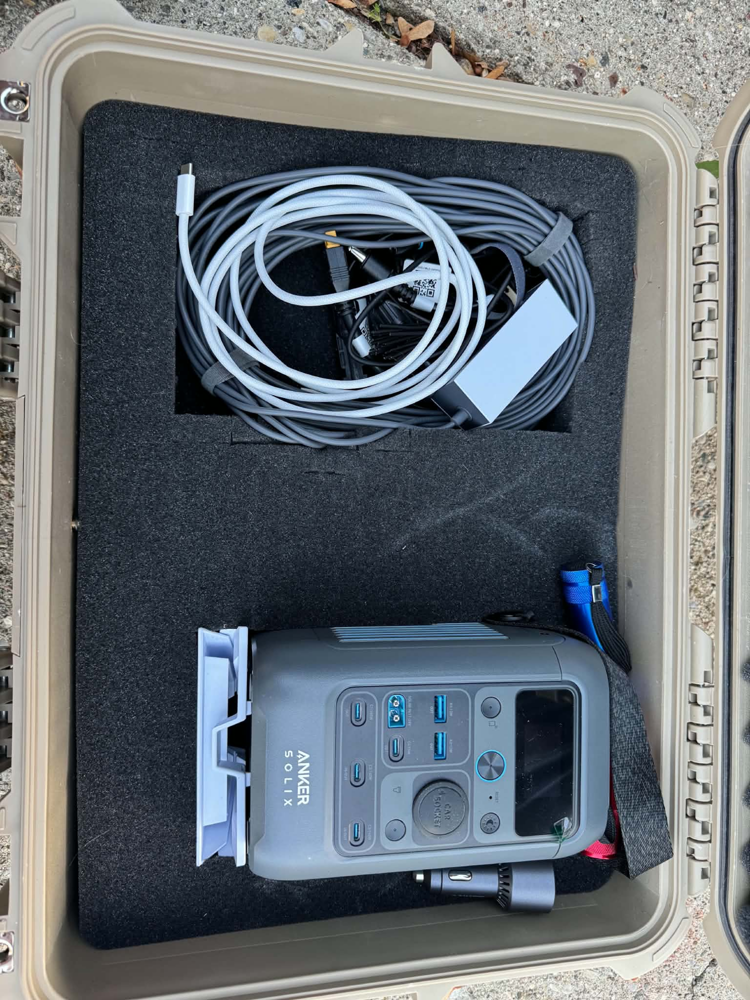

Everything you need to build a complete portable setup
Please support me by using my referral link.
Get $100 in cash or Starlink service credit when you sign up through this link. Fast, reliable internet at home and on the go. Terms apply.




Based on a real working build. This is the exact kit used by people who already have a Starlink Mini. The case holds the dish (mounted in the lid), power station, solar panel, and cables so everything stays protected and ready to go.
The Starlink Mini itself is not included — this is the supporting gear.
IP65 hard case with pick-and-pull foam. Large enough for the Starlink Mini (mounted in the lid), Anker power station, solar panel, and cables. ~$60 at Harbor Freight — much cheaper than Pelican equivalents.
~$60 Buy at Harbor Freight Amazon options3D-printed mount that holds the Starlink Mini securely in the lid of the Apache 4800 so it doesn’t fall when the case is closed or carried. Specific model for the 10 3/16" × 11 3/4" Mini.
~$45 Buy on Etsy288Wh LiFePO4 battery. Powers the Starlink Mini for many hours and can be recharged from solar, USB-C, or a car. Compact enough to fit in the case with the rest of the gear. Multiple USB-C ports + car socket.
~$200 Buy on AmazonRecharges the Anker power station off-grid. A 60W or 100W foldable panel fits in the case and keeps the system running indefinitely in good sun. Anker SOLIX panels are the easiest match; other compatible panels also work.
$80–200 Anker 60W options 100W optionsUSB-C cables (for charging the power station and powering the Mini), a car charger adapter if you want to top up while driving, and any extra connectors. Most of these come with the power station or are cheap add-ons.
~$20–40 USB-C cablesStarlink does not currently sell an official portable battery pack for the Mini. Aftermarket clip-on packs (such as the PeakDo LinkPower 2) offer ~4–6 hours of runtime and attach directly to the dish. Larger solutions like the Star-Batt exist but are much heavier and more expensive. The Anker + solar approach in this kit is one of the most popular DIY methods for longer off-grid use.
Get $100 in cash or Starlink service credit when you sign up through this link. Fast, reliable internet at home and on the go. Terms apply.
New customers only. Must order on starlink.com through the link.